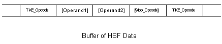

Opcode Mnemonics
Immediately following the opcode in the HSF will be the arguments,
if any, to that specific opcode. These are listed in the operands list of
each opcode definition. In the documentation this list is formatted as
a list of comma separated datatypes, in the HSF stream the opcodes and
their operands are packed without any spaces or commas between
them.

Some opcodes are expected to be
used in ordered pairs, examples of these include
TKE_Start_Compression/TKE_Stop_Compression and
TKE_Start_User_Data/TKE_Stop_User_Data. Not using these opcodes as
ordered pairs will result in corrupt HSF streams.
Below is a table containing the definitions of
the different datatypes. Depending on the context datatypes can be signed or
unsigned.
| Byte |
Single byte of binary data. This is
often used for character strings. |
|
Short/Word |
short integer (two bytes) of binary memory, stored in
little-endian format. |
| Int/Long |
integer (four bytes) of binary memory, stored in
little-endian format. |
| Float |
Floating point value stored in little endian format. |
| Point |
An array of 3
floats. |
| Variable |
1 to 4 bytes, normally used for bitmasks. Specific details given for each usage in the
appropriate opcode. Common case is to read 1 byte, and if the
appropriate bit is set, one or more additional bytes specify additional
more-significant bits. |
Arrays
Arrays are specified by (count)x in front of the base type. The count maybe an expression based on a previous operand value.
Optional Fields
The presence of some data may be dependent on previous
data elements. Square brackets ([ ]) will surround those data elements.
The field and/or object description will indicate the dependency.
|